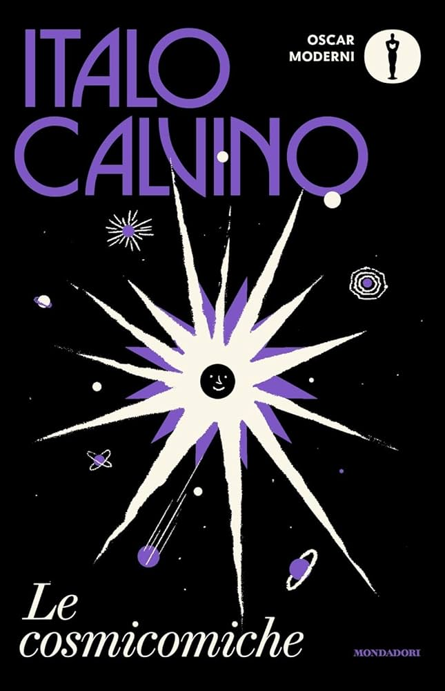

Come sono state ridisegnate le copertine di Italo Calvino
In occasione del centenario di Italo Calvino la casa editrice Mondadori ha ripubblicato tutti i libri del grande autore italiano. Per farlo la Mondadori ha avviato un processo di “uniform edition”; le copertine dei 33 libri dell'autore sono state ridisegnate completamente, andandole ad uniformare per far sì che fossero subito riconoscibili e associabili a questa determinata edizione.
Cruciale durante questo processo è stato il dare coerenza grafica tra una copertina e l'altra, e ricordare che il look che i libri avranno sarà associato da parte dei lettori delle generazioni odierne ad Italo Calvino; quindi non era solo un lavoro legato all'immagine delle copertine ma un qualcosa che in un modo o nell'altro andasse a modificare l'immagine dell'autore nelle menti dei lettori.
Per scegliere a chi sarebbe andato il compito di ridisegnare l'immagine di Italo Calvino la Mondadori ha preso in considerazione solo designer stranieri, in quanto questi sono molto propensi a leggere le opere per cui vanno a lavorare, e perché un italiano potrebbe associare istintivamente l'autore ai banchi di scuola, in quanto lo stesso è molto studiato nelle scuole italiane; ad essere scelto, tra altri 4 designer è stato l'irlandese jack Smyth.

Copertine
jack Smyth è un grafico irlandese che negli anni ha realizzato diversi prodotti editoriali molto apprezzati a livello internazionale, e molte delle copertine da lui realizzate sono nelle librerie. Lo stesso Smyth si è rivelato essere un lettore di Italo Calvino da diversi anni, ha affermato: «sono stato entusiasta dell'invito a lavorare sul progetto perché amo le sue opere», e per questo fin da subito aveva un'idea generale per il progetto grafico.
Il progetto grafico vuole dare l'idea che Calvino sia un autore «giocoso, ma anche serio, i suoi libri non sono comici, ma contengono un modo diverso di guardare alle cose, sempre profondo ed esistenziale, ma in una maniera accessibile e gioiosa»; le illustrazioni delle copertine contengono riferimento ai libri, ma non rappresentandoli completamente.
Inizialmente Mondadori ha richiesto ai 4 possibili grafici di realizzare le copertine per 3 libri, realizzandole per far si che fossero «narrative, calde, non concettuali», che «parlassero anche a un pubblico giovane» e che «trattassero Italo Calvino come un brand riconoscibile», Smyth ne realizza sette, per essere sicuro che lo stile da lui scelto fosse coerente anche per altri libri.
Designer
Una delle prime sfide del grafico è stata quella di incastrare il design delle copertine con i 2 marchi che Mondadori inserisce in ogni copertina; questa si è rivelata una sfida in quanto spesso nelle copertina internazionali con cui lo stesso ha spesso a che fare non troviamo i marchi delle case editrici; nelle prime proposte quindi il grafico ha cercato un modo per rendere il design il più adatto possibile a questa necessità.
Altro cavillo da andare a risolvere era quello dei caratteri da usare, nella prima proposta di copertina il carattere scelto per il nome dell'autore era un carattere molto pesante, e in contrasto con quest'ultimo ne era stato scelto uno che andasse a riprodurre la scrittura manuale per i titoli. La scelta finale per i due caratteri è finita per il “Busorama” per il nome dell'autore e il “Brunel Deck” per i titoli.
I colori delle copertine sono poi stati scelti non singolarmente ma andando ad osservare i libri come un tutt'uno per far si che non ci fosse una supremazia di un colore sugli altri; ogni libro, oltre al bianco e al nero, ha 2 colori che fanno in modo che i libri siamo distinguibili da lontano tra di loro.